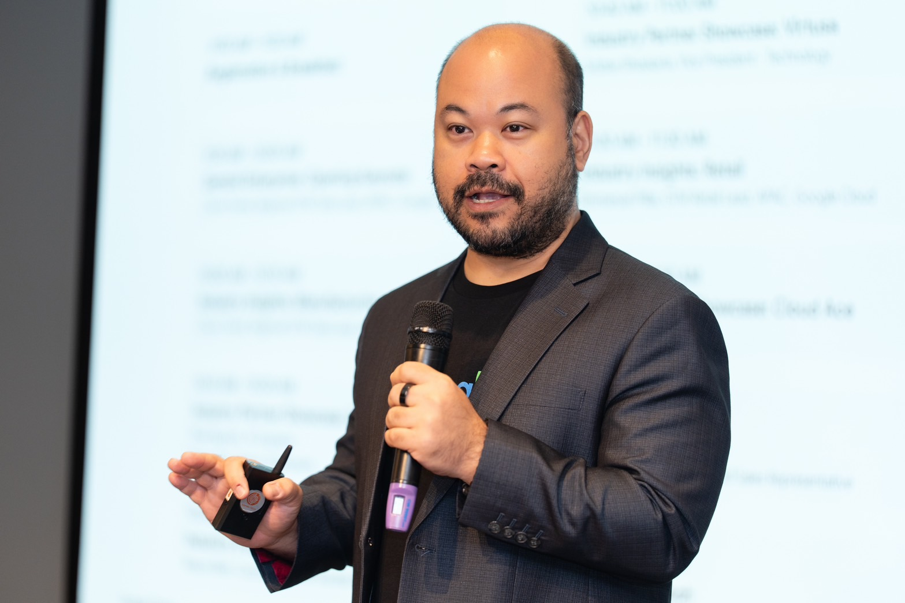
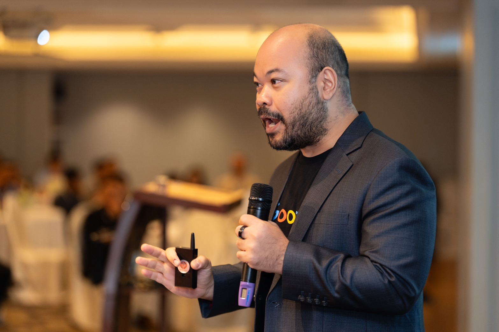

Hi, I'm Chom
AI is compressed experience.
It won't give you a passion. It closes the years between wanting to do something and being able to. I write about using it to build what you care about — and why it's never too late to start.


Hi, I'm Chom
It won't give you a passion. It closes the years between wanting to do something and being able to. I write about using it to build what you care about — and why it's never too late to start.
What I Believe
The patterns a senior engineer, lawyer or operator spends a decade learning are now a conversation away. Experience is no longer the bottleneck. Acting on it is.
AI can give you ten ways to do something. Framing the right problem, knowing what good looks like and finishing the job are still on you — and they matter more than ever.
The gap between beginner and useful has shrunk from years to months. What you already know isn't a sunk cost; it's the context that makes AI useful to you.
One person with good judgment and the right AI stack can run what used to take a team. I'm building mine in public, and sharing what works and what breaks.
Thoughts & Perspectives
Why the question isn't "will AI replace my skills?" but "what would I build if experience stopped being the bottleneck?"
Short takesOpinions, experiments and building-in-public notes on running a company of one with AI. Follow @ctrevai.
Long-formLonger posts on AI adoption, go-to-market across Asia, and what it takes to get from demo to production.
Get To Know More


20+ years
AI, Robotics & Enterprise Tech
3x Founder
Adviser to AI startups

B.Eng. University of Electro-Communications
Ph.D. The University of Tokyo
Computer Science & Robotics
I've spent more than 20 years where AI, robotics and business meet: a Ph.D. in cooperative multi-robot systems at The University of Tokyo, business and technology roles at Cisco, GE Digital and ServiceMax in Japan, then leading AI/ML business at AWS across Japan and Southeast Asia. Today I'm Regional GTM AI Lead for JAPAC at Google Cloud, and I work with AI startups as an adviser and builder.
Along the way I've watched AI turn years of hard-won experience into something anyone can borrow. I write about how to use that — for your career, your company, or the thing you've always wanted to build. Views here are my own.
The Proof
Google Cloud
Driving AI adoption and go-to-market strategy across the Japan and Asia-Pacific region.
Amazon Web Services (AWS) • Singapore
Helped organizations across Southeast Asia transition from piloting to operationalizing machine learning at scale.
Amazon Web Services (AWS) • Japan
Drove AI/ML adoption and business development across enterprise customers in Japan.
Cisco Systems, GE Digital, ServiceMax • Japan
Business development and technology leadership roles across digital transformation, IoT, cybersecurity, and contact center intelligence.
The University of Tokyo
Ph.D. research on cooperative multi-robot systems and autonomous exploration using reaction-diffusion models. 14 publications, 78+ citations.
Talks & Thought Leadership

VinAI Research Talk
Foundation models, accelerated training, and knowledge base solutions — and how enterprises turn proprietary data into an AI advantage.
NECTEC-ACE Conference, Thailand
How Data and AI can benefit innovation across public sector, enterprise, and startups, including discussion on Thai language LLMs and national AI strategy.
AWS Public Sector Day, Thailand
Driving AI adoption and digital transformation in government and public services across ASEAN through cloud-native AI/ML solutions.
Academic Contributions
14 Research Works • 78+ Citations • University of Tokyo
Journal of Intelligent & Robotic Systems
International Conference on Robotics and Automation
Distributed Autonomous Robotic Systems (DARS), 2002
Distributed Autonomous Robotic Systems (DARS), 2004
IEEE International Conference on Systems, Man and Cybernetics (SMC), 2003
Get in Touch
Building something with AI, or thinking about starting? I'd like to hear about it.